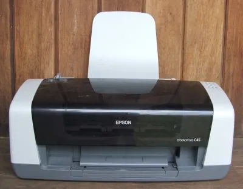
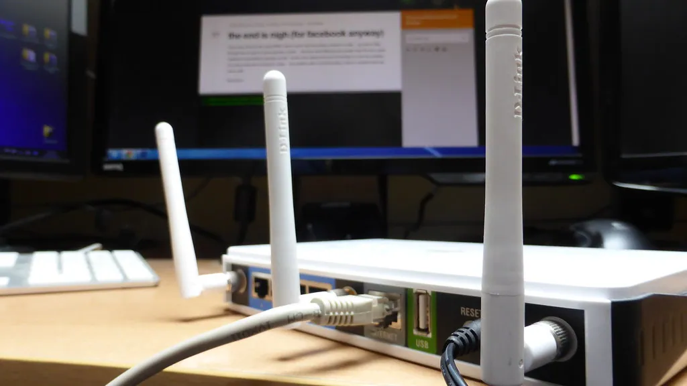

Printer & Wi-Fi
To reach the internet or a modern printer, your computer first joins your home Wi-Fi. Here is how to connect, add a printer, print a test page, and handle the usual hiccups without stress.

Kindly Keystrokes is an independent educational website and is not affiliated with, endorsed by, or sponsored by any company mentioned.
Wi-Fi comes first
Before a computer can reach the internet or a modern printer, it usually needs to join your home's Wi-Fi — the wireless signal that your internet box sends through the house. Joining it once is enough; the computer remembers.
What you'll need
- The name of your Wi-Fi network (printed on a sticker on your internet box)
- The Wi-Fi password (on the same sticker, sometimes called the key or passphrase)
- Look at the bottom-right of the taskbar for a small fan-shaped Wi-Fi symbol and click it.
- Click the small arrow next to the Wi-Fi symbol to see the list of nearby networks.
- Find your network name in the list and click it.
- Tick Connect automatically, then click Connect.
- Type your Wi-Fi password exactly as printed, minding capital letters, and click Next.
Tip: If the password will not take, it is almost always a capital letter or a zero-versus-letter-O mix-up. Type slowly and check each character against the sticker.

Adding a printer
Most printers today connect over the same Wi-Fi, with no cable to the computer at all. The goal is to add the printer so Windows knows it is there.
- Turn the printer on and make sure it is connected to your Wi-Fi — many printers have a small screen that walks you through this, choosing your network and typing the same password.
- On the computer, open Settings, then Bluetooth & devices, then Printers & scanners.
- Click Add device. Windows looks around your network and lists any printers it finds.
- When your printer's name appears, click Add device next to it and wait while Windows sets it up.
If your printer did not come with Wi-Fi, you can still use it with the cable that came in the box. Plug the square end into the printer and the flat end into the computer, and Windows usually adds it on its own within a minute.
Printing a test page
A test page proves the printer and computer are talking to each other. It is the satisfying moment when a blank sheet comes out covered in words.
- In Printers & scanners, click your printer's name.
- Click Printer properties.
- On the first tab, click Print Test Page.
- Walk to the printer and collect your page.
Try it now: print something you wrote
- Open a short email or document.
- Hold the Ctrl key and tap the letter P — this is the shortcut for Print.
- Check that your printer's name is shown at the top of the box.
- Click Print and collect the page.
Choosing how a page prints
When you print, a box appears with a few choices. You can safely ignore most of them, but three are worth knowing because they save paper and ink.
- Copies — how many of each page you want. Leave it at 1 unless you need more.
- Color or black and white — choose black and white (sometimes called grayscale) for letters and recipes to save colored ink for photos.
- Pages — if a document is ten pages but you only need page three, type 3 here rather than printing the lot.
- When the choices look right, click Print.
Tip: Printing on both sides of the paper, if your printer offers it, halves your paper use. Look for a setting called “double-sided” or “duplex” in the print box.
Scanning a document
Many home printers can also scan — that is, make a digital copy of a paper document so you can email it. This is wonderfully handy for sending a signed form back to an office.
What you'll need
- A printer that can scan (it will have a lid that lifts over a glass surface)
- The paper document you want to copy
- Lift the lid and lay your document face down on the glass, lined up with the corner arrow.
- On the computer, open the Start menu, type Windows Scan, and open the Scan app (installing it from the Store if prompted).
- Choose your printer, pick PDF as the file type for documents, and click Scan.
- When it finishes, click View to check it, then attach that file to an email as you learned in the email lesson.
Common snags, calmly solved
Printers are famously temperamental, but most troubles have the same handful of causes. Work down this table in order.
| What you see | Likely reason | What to try |
|---|---|---|
| Nothing prints | Printer is off or asleep | Check the power light; press any button to wake it; make sure it shows as connected in Settings. |
| "Printer offline" | Lost the Wi-Fi link | Turn the printer off and on again, then wait a minute for it to rejoin the network. |
| Faint or streaky print | Low or dried ink | Run the printer's own "clean" routine from its screen; replace a cartridge that is empty. |
| Paper jam | A sheet is stuck | Gently pull the paper in the direction it was feeding; never yank. Close all doors and try again. |
Tip: When a printer behaves strangely, turn it off, count to ten, and turn it on again before anything else. This clears most faults by itself — the same trick that works on the computer.
Printing a photograph
Printing a favorite picture to pop in a frame or the post is one of the quiet pleasures of a home printer. For photos, a little extra care is worth it.
What you'll need
- The photo saved in your Pictures folder
- Photo paper if you have it (ordinary paper works too, just less glossy)
- Open the Photos app and click the picture you want.
- Click the three-dot menu (or the printer symbol) and choose Print.
- Choose your printer, then set Color on and pick the paper size, usually 4×6 for a snapshot.
- If you loaded photo paper, select it in the paper-type list so the printer uses its best quality.
- Click Print and let the sheet dry for a minute before handling it.
Tip: Colored photo ink is the most expensive kind, so save it for pictures you truly want on paper. For everything else, black and white does the job beautifully.
Using a printer with a cable
If your printer does not offer Wi-Fi, or you would simply rather use a cable, the connection is wonderfully reliable and needs no password at all.
- Find the printer cable that came in the box — it has a flat rectangular end and a squarer end.
- Push the square end into the matching socket on the back of the printer.
- Push the flat end into any rectangular USB socket on your computer.
- Turn the printer on. Within a minute Windows usually recognizes it and sets it up by itself.
- Check it appears under Settings → Bluetooth & devices → Printers & scanners, then print a test page.
If the printer will not show up
Now and then Windows does not find a Wi-Fi printer straight away. Work through these in order and it almost always appears.
- Make sure the printer and the computer are on the same Wi-Fi network — not the computer on one and the printer on a neighbour's or a guest network.
- Turn the printer off, wait ten seconds, and turn it on again, then give it a minute to rejoin the Wi-Fi.
- On the computer, open Settings → Bluetooth & devices → Printers & scanners, and click Add device again.
- If it still hides, restart the computer and try once more — a fresh start clears many small faults.
- As a sure fallback, connect the printer with its cable as described above; a cabled printer nearly always appears at once.
Tip: Printers drop off Wi-Fi more often than computers do. If a printer that worked yesterday is missing today, it has usually just lost its wireless connection — the off-and-on routine brings it back.
Ink and paper, without the pressure
Your printer will tell you when ink runs low. You do not need the most expensive cartridges, but you do need the ones that match your exact printer model, which is printed on the front of the machine. Plain white paper marked for inkjet or laser printers suits everyday use. Buy what you need and no more; ink does not improve with age.
When a printer finally stops working for good, its maker's official website is the place for warranty help — type the company's address into the browser yourself rather than searching, so you reach the genuine page. With Wi-Fi joined and a printer added, you are ready for the programs that make a computer worth having. See Everyday Programs next.